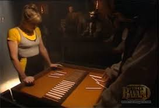

- Les joueurs retirent chacun leur tour 1, 2, ou 3 bâtonnets il ne faut pas être celui qui retirera le dernier.
Le jeu des batonnets est un jeu de duel qui demande logique et strastégie. Il est connu sous le nom actuel de "jeu de Nim" a été donné par la mathématicien anglais Charles Leonard Bouton en 1901 qui a trouvé un algorithme permettant le gain. En 1951,le Nimrod a été conçu, c'est le premier ordinateur dont le seul but est de permettre de jouer à un jeu, en l'occurrence le jeu de Nim.